Добавление функции в существующем программном IT-проекте веб-ориентированной компоненте образовательной среды
Отчёт по выполненной работе
Создание репозитория в GitHub
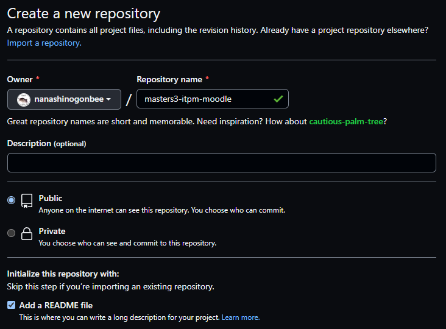
Клонирование репозитория в локальную папку
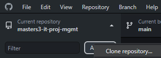
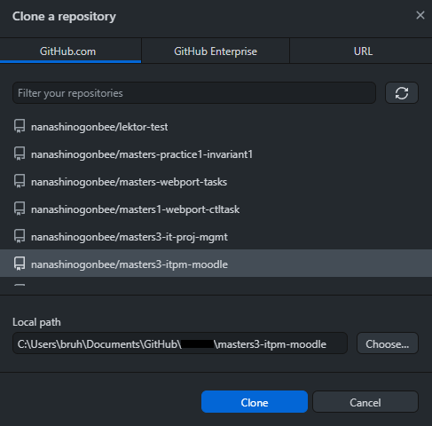
Создание нового коммита
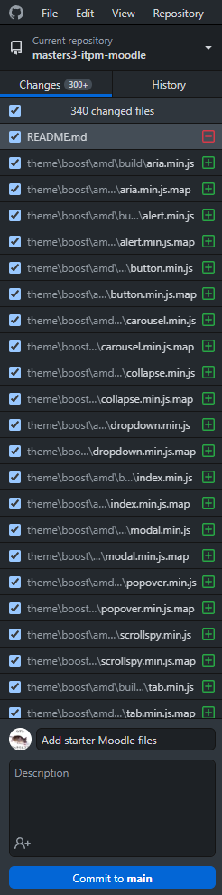
Отправка изменений в удалённый репозиторий
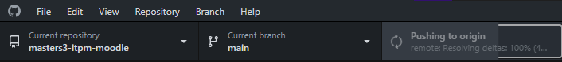
Создание нового issue
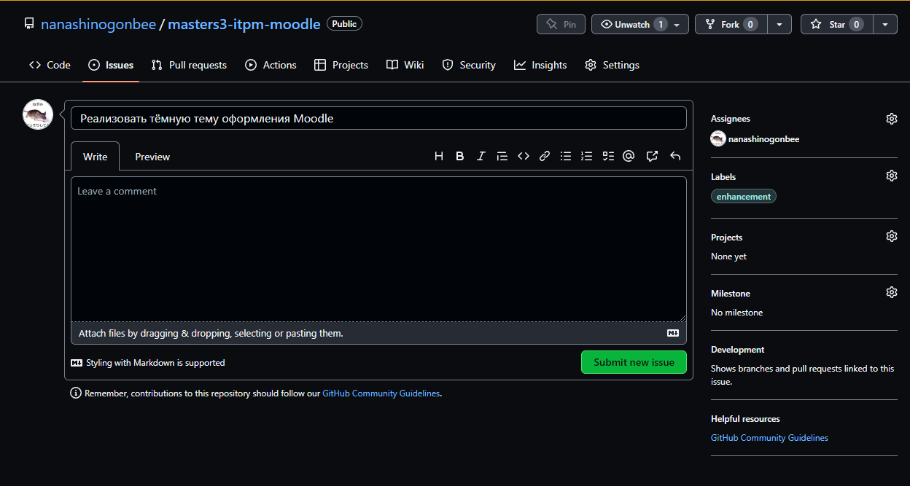
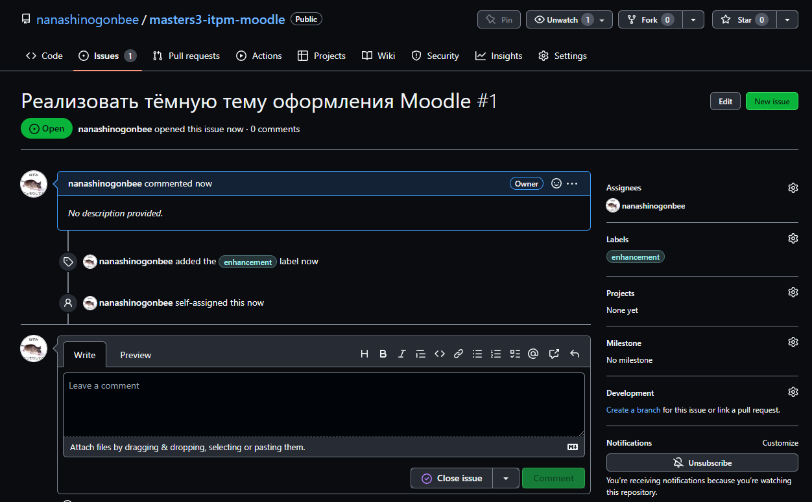
Создание новой ветки с тёмной темой
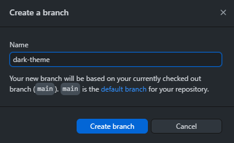
Создание файлов в новой ветке
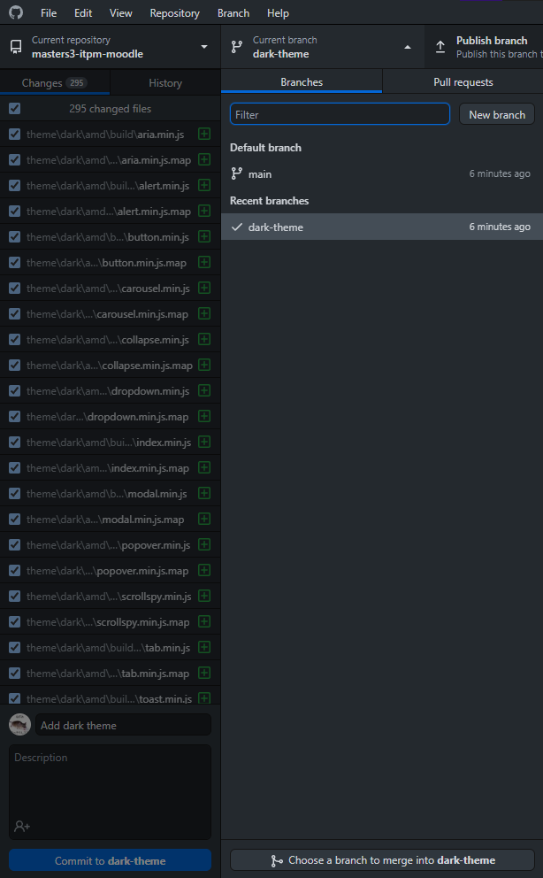
Отправка изменений из новой ветки в удалённый репозиторий
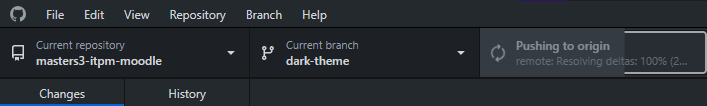
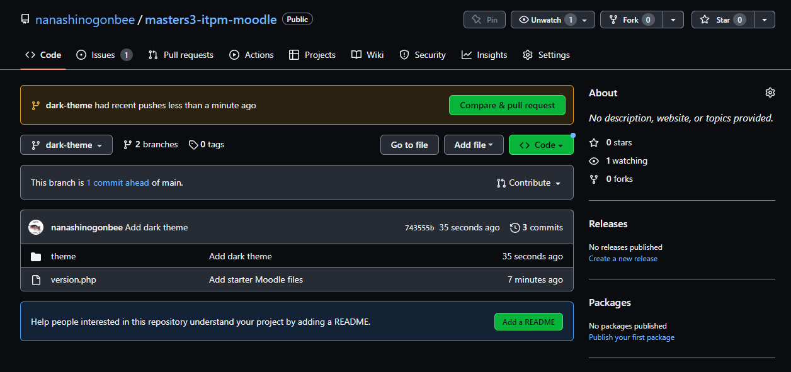
Создание нового пулл-реквеста
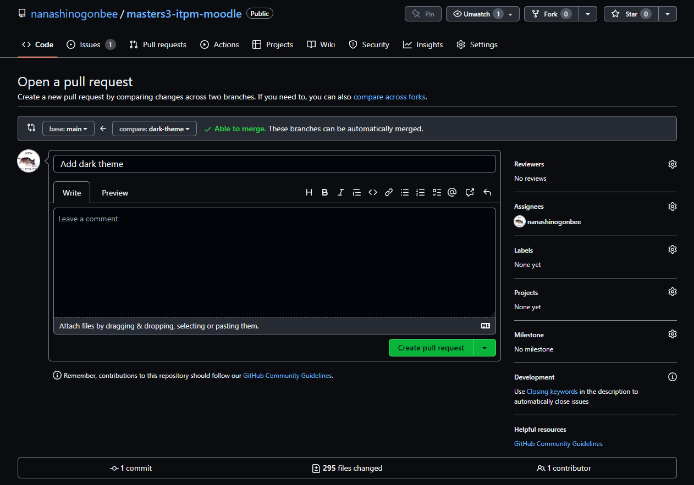
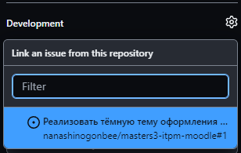
Слияние файлов из пулл-реквеста
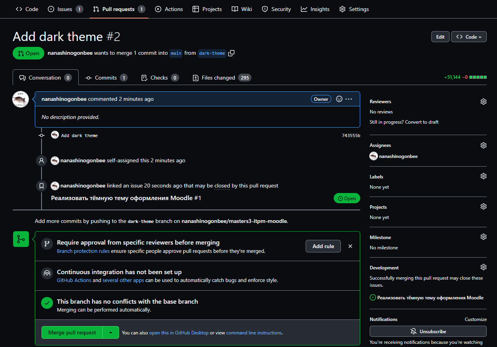
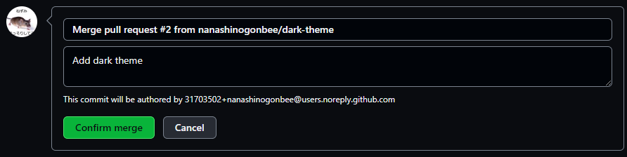
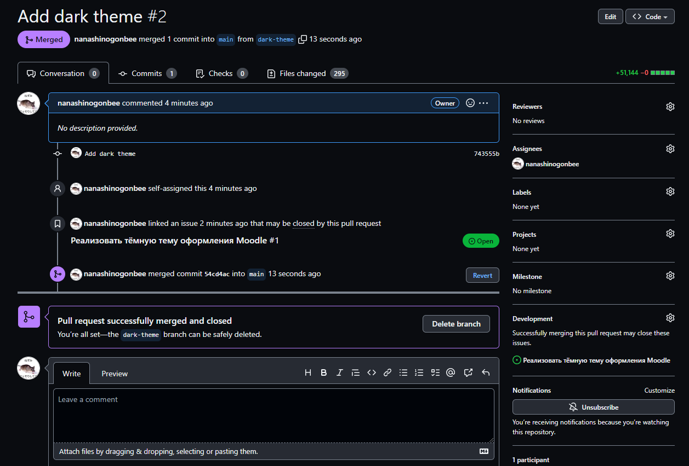
После слиния файлов issue была закрыта автоматически
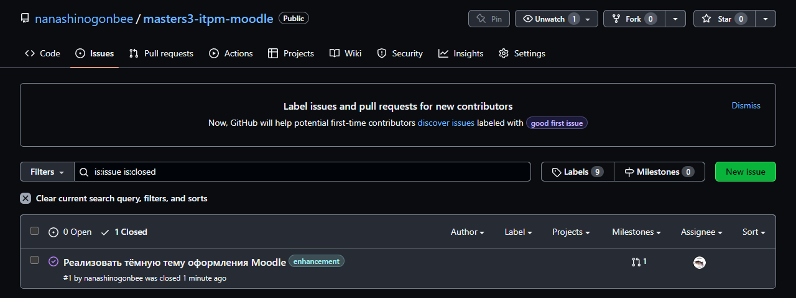
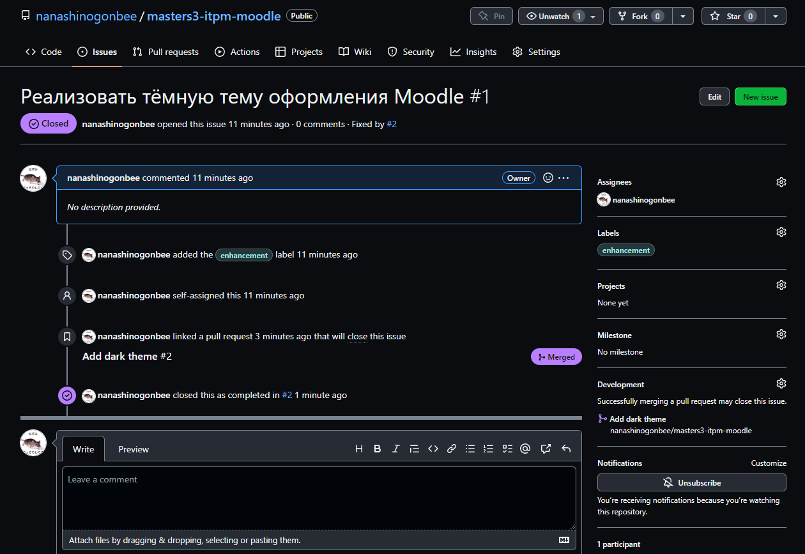
Изменения из ветки dark-theme отразились в главной ветке
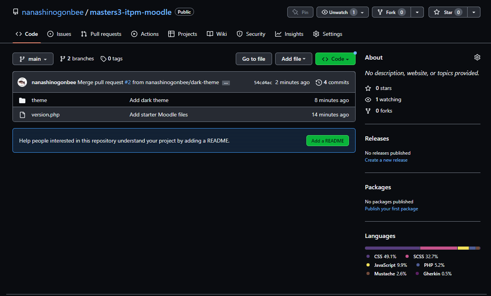